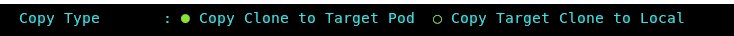

Clone Copy
This Db2 Shift command provides a feature that allows a user to copy an existing database clone copy to a POD, or to retrieve a database clone from a POD.
Once a database clone has been generated, the copy can be moved to any location and then deployed locally. This option provides a convenient way of copying the database using Db2 Shift without having to use OpenShift or Kubernetes commands.
The panel requires the following information:
- Type of copy (From Source to Target or Target to Source)
- Source cloned database directory
- Target cloned database directory
- The destination POD and server details
The syntax for copying a cloned database to a POD:
db2shift
Required Options
--mode=push_clone (Source to Target)
--mode=pull_clone (Target to Source)
--dest-type=POD
--oc or --kubectl
--dest-server=c-demo-db2u-0
--local-dir=/tmp/cache
--dest-dir=/tmp/cache
Optional Settings
--dest-namespace=db2u
The panel that provides this capability:

Mode Option
Syntax: --mode=push_clone, --mode=pull_clone

The Db2 Shift will copy a cloned database to a pod, or retrieve the contents of a cloned database back to the local instance.
Source Clone Directory
Syntax: --local-dir=""

The cloned copy of the database will be retrieved or stored in this location depending on what type of copy operation is being performance.
Target Clone Directory
Syntax: --dest-dir=""
The cloned copy of the database will be placed into the target directory that is
specified by this field. If you are pulling a copy (--mode=pull_clone), this
field contains the cloned database that is going to move to the local directory.
Target Client
Syntax: --oc, --kubectl

The pod client for a copy operation must be supplied as part of the Db2 Shift command. Only one of the following clients must be used:
--ocOpenShift Destination--kubectlKubernetes Destination
If the client is Kubernetes (--kubectl) or OpenShift (--oc),
the program requires that the appropriate kubectl or oc client
has been installed locally and that the namespace or project has already been specified.
Destination Server (POD)
Syntax: --dest-server="pod_name"

For deployments to OpenShift, Kubernetes, or CP4D, you must supply the name of the POD that Db2U is running in. The OpenShift or Kubernetes client should be used to connect to the target namespace or project before issuing the Db2 Shift command.
Destination Pod Namespace or Project
Syntax: --dest-namespace="", --dest-project=""

In Kubernetes deployments, the location of a pod is associated with a namespace, while in OpenShift deployments, the pod is associated with a project.
When authenticating to a Kubernetes or OpenShift environment, it is recommended that the local client be connected to the project or namespace that the Db2U pod is running in.
If you do not supply a namespace or project value, the Db2 Shift program will assume that you are already connected to that project. If this is not the case, the program will stop with an error when it attempts to find the pod.
To have Db2 Shift connect to the appropriate project or namespace, supply the value of the namespace or project using this option.